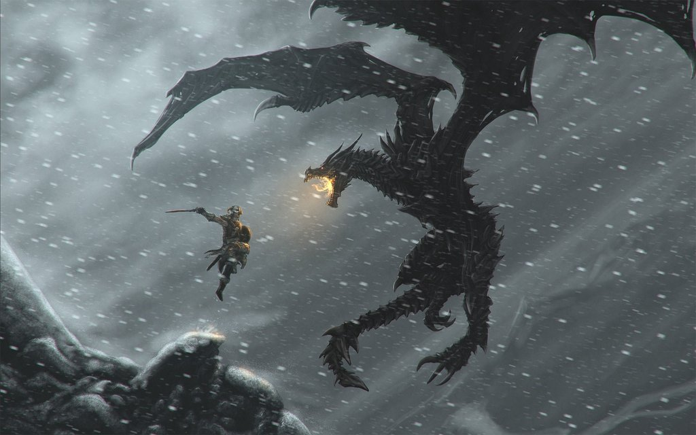

About The Dragonborn
The Dragonborn never asked for the power that was bestowed upon him. Though he never asked he took control of his destiny to save the realm of Skyrim.
The Dragonborn faces off against one of the many dragons invading Skyrim
The Dragonborn's Characteristics
- Excellent with a sword and board
- Wears light armor.
- Perfers to find his weapons on the bodies of his slain enemies
Allies
The Dragonborn needs allies to help him traverse the inhospitable landscape of the frozen north: